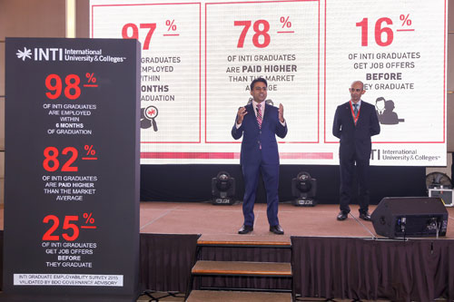

Why INTI
-
At INTI, we believe in an education that will empower you for life.
- Gain the best quality education with world class facilities and resources, regardless of your field of studies.
- Experience quality education that prepares you to face the challenges in the global market.
- Achieve an added edge while expanding your global perspectives through our collaborations with highly acclaimed international universities.

The Way We Teach

We are International
Individual Development
- Education must change to meet the needs of tomorrow’s world.
- Be the champion of change, reinventing education for the dynamic leaders of the future.
- We will provide the most international, innovative and individualised education.
- Student-centric * Trustworthy * Accountable * Respectful * Spirited
Our Belief
Our Vision
Our Mission
Our core values S.T.A.R.S.
Student Support and Services

Preparing for Employability
-
We have worked hard to create opportunities for you to set yourself apart from the pack. Therefore,
studying a quality education at INTI is just a first step towards a great career.
At INTI, you will be given assistance to do active career planning through our INTI Graduate Placement process where you will learn all about career plans, resumes, interview skills, and grooming.
